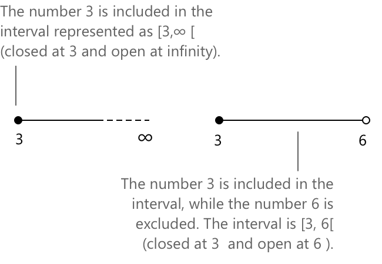

Лінійні нерівності
Вступ до нерівностей
Нерівність — це математиutчне твердження, що містить алгебраїчні вирази, для яких ми шукаємо значення змінних, що роблять нерівність правильною. Загалом, нерівність між двома алгебраїчними виразами \( A(x) \) та \( B(x) \) визначається як відношення:
\[A(x) > B(x) \]
Розв'язання нерівності полягає у визначенні множини розв'язків, тобто всіх значень \( x \), що задовольняють попередню нерівність. Розв'язками нерівностей є підмножини \( \mathbb{R} \), визначені як інтервали.
Дано два дійсні числа \( a \) та \( b \), такі що \( a < b \); обмежений інтервал визначається як множина дійсних чисел між \( a \) та \( b \), де \( a \) та \( b \) є відповідно нижньою та верхньою межами. Необмежений інтервал — це множина чисел, які або передують \( a \), або йдуть за \( a \). Якщо кінцеві точки обмеженого інтервалу включені, інтервал називається замкненим, в іншому випадку він називається відкритим.

Знак нерівності визначає, чи є інтервал розв'язків відкритим або замкненим на своїй межі. Строга нерівність, що виражається за допомогою \( > \) або \( < \), виключає граничне значення, що дає відкритий інтервал. Нестрога нерівність, що виражається за допомогою \( \geq \) або \( \leq \), включає його, що дає замкнений або напіввідкритий інтервал.
| Нерівність | Інтервал |
|---|---|
| \( x > a \) | \( (a, +\infty) \) |
| \( x \geq a \) | \( [a, +\infty) \) |
| \( x < a \) | \( (-\infty, a) \) |
| \( x \leq a \) | \( (-\infty, a] \) |
| \( a < x < b \) | \( (a, b) \) |
| \( a \leq x \leq b \) | \( [a, b] \) |
Попередня таблиця узагальнює відповідність між знаком нерівності та отриманим позначенням інтервалу для лінійної нерівності з однією змінною.
Ступінь нерівності відповідає ступеню полінома \( P(x) \), отриманого шляхом переписування нерівності у вигляді \( P(x) > 0 \). Лінійна нерівність або нерівність першого ступеня визначається у загальному вигляді:
\[ax > b\]
Кожна нерівність першого ступеня при \( a \neq 0 \) завжди має інтервал значень як свій розв'язок. Умова \( a \neq 0 \) є важливою. Коли \( a = 0 \), змінна повністю зникає з нерівності, і задача зводиться до порівняння двох сталих. Розглянемо загальний випадок при \( a = 0 \).
\[ 0 \cdot x > b \]
Це спрощується до \( 0 > b \). Якщо \( b < 0 \), нерівність виконується незалежно від значення \( x \), і множиною розв'язків є вся множина \( \mathbb{R} \). Якщо \( b \geq 0 \), нерівність ніколи не задовольняється, і множина розв'язків є порожньою. У будь-якому випадку, немає інтервалу, визначеного граничною точкою: результатом є глобальна істина або суперечність, а не належна нерівність першого ступеня.
Для заданої нерівності еквівалентну нерівність можна отримати, додавши одне й те саме число або вираз до обох частин, за умови, що вираз є визначеним у тій самій області визначення. Нерівність \( 5x - 2 > x + 3 \) еквівалентна нерівності \( 4x - 2 > 3 \) шляхом віднімання \( x \) з обох частин.
Еквівалентну нерівність також можна отримати, поділивши або помноживши обидві частини на одне й те саме ненульове значення. Однак, якщо значення є від'ємним, знак нерівності має бути змінений на протилежний. Завжди корисно переписати нерівність першого ступеня, таку як \( -x + 5 < -3 \), у вигляді \( x - 5 > 3 \). Зміна знаків вимагає зміни напрямку нерівності.
Геометрична інтерпретація
Множина розв'язків лінійної нерівності завжди відповідає півпрямій на числовій прямій, тобто необмеженому інтервалу, що простягається нескінченно в одному напрямку від граничної точки.
-
Коли нерівність є строгою, гранична точка виключається, і півпряма є відкритою з цього кінця.
-
Коли нерівність є нестрогою, гранична точка належить до множини розв'язків, і півпряма є замкненою.
Розглянемо, наприклад, просту нерівність \( x \geq 1 \). Її множиною розв'язків є замкнена півпряма \( [1, +\infty) \), зображена нижче.
| \[ 1 \] | ||
|---|---|---|
Це геометричне тлумачення пояснює, чому розв'язання нерівності першого ступеня ніколи не є ізольованою точкою або обмеженим проміжком: лінійна структура виразу \( ax - b \) гарантує, що його знак змінюється рівно один раз, при \( x = b/a \), поділяючи дійсну пряму точно на дві області, одна з яких становить розв'язання.
Приклад 1
Розглянемо наступну нерівність:
\[-\frac{x}{2} + 5 > 2x – 5\]
Мета полягає в тому, щоб звести її до стандартного вигляду \( ax > b \). Оскільки ліва частина містить дріб зі знаменником \( 2 \), множення обох частин на \( 2 \) усуває знаменник без зміни напрямку нерівності, оскільки множник є додатним.
\[-x + 10 > 4x – 10\]
Згрупувавши всі доданки зі змінною \( x \) ліворуч і перенісши сталі доданки праворуч, отримаємо наступне.
\[-5x > -20\]
Ділення обох частин на \( -5 \) ізолює змінну. Оскільки дільник є від'ємним, напрямок нерівності має бути змінений на протилежний.
\[x < 4\]
Множина розв'язків — це відкритий проміжок \( (-\infty, 4) \).
Як розв'язувати літерні нерівності першого ступеня
У випадку літерних нерівностей першого ступеня коефіцієнт змінної не є фіксованою сталою, а залежить від одного або кількох параметрів. Розглянемо наступну нерівність.
\[z(x - 1) < 2x + 1\]
Першим кроком є розкриття дужок і групування доданків, щоб переписати вираз в одній зі стандартних форм \( Ax > B \), \( Ax < B \), \( Ax \geq B \) або \( Ax \leq B \). Розкриваючи ліву частину та переносячи всі доданки зі змінною \( x \) ліворуч, отримаємо наступне.
\[ \begin{align} &zx – z < 2x + 1 \\[6pt] &zx – 2x < z + 1 \\[6pt] &(z – 2)x < z + 1 \end{align} \]
Тепер нерівність має вигляд \( Ax < B \), де \( A = z - 2 \) та \( B = z + 1 \). Оскільки ділення обох частин на \( A \) вимагає знання його знака, а знак \( z - 2 \) залежить від значення параметра \( z \), необхідно розглянути три окремі випадки.
Коли \( z > 2 \), коефіцієнт \( z - 2 \) є додатним. Ділення обох частин на додатну величину зберігає напрямок нерівності, що дає наступне.
\[x < \frac{z + 1}{z – 2}\]
Коли \( z = 2 \), коефіцієнт \( z – 2 \) дорівнює нулю. Підстановка цього значення зводить нерівність до \( 0 \cdot x < 3 \), що виконується для будь-якого \( x \in \mathbb{R} \). Множиною розв'язків є вся множина \( \mathbb{R} \).
Коли \( z < 2 \), коефіцієнт \( z – 2 \) є від'ємним. Ділення обох частин на від'ємну величину змінює напрямок нерівності на протилежний, що дає наступне.
\[x > \frac{z + 1}{z - 2}\]
Нерівності з модулем
Нерівності з модулем — це нерівності, що базуються на властивостях модуля і мають вигляд:
\[|x| < z \]
Загалом, нерівності з модулями не належать до класу лінійних нерівностей, оскільки наявність функції модуля змінює поведінку виразу, вносячи розрив, що порушує його лінійну структуру. Однак за допомогою відповідного процесу розкладання їх можна перетворити на одну або кілька еквівалентних систем лінійних нерівностей, що дозволяє аналізувати їх за допомогою тих самих методів, які застосовуються до нерівностей першого ступеня.
Щоб розв'язати їх, нам потрібно розглянути знак модуля, розділивши його на два випадки:
- \( |x| < z \) тоді і тільки тоді, коли \(-z < x < z\).
- \( |x| > z \) тоді і тільки тоді, коли \( x < -z \quad \text{або} \quad x > z \).
Отже, ми повинні розв'язати систему нерівностей, що виникає з можливих випадків, розглянутих під час аналізу. Цей процес дещо складніший, ніж розв'язування простих лінійних рівнянь, і під час обчислень слід бути уважними до знаків і напрямку нерівності.
Приклад 2
Спробуймо розв'язати наступну нерівність з модулем:
\[|x – 1| < 2x + 4 \]
Спочатку дослідимо знак \(|x – 1|\). Маємо:
\[ |x – 1| = \begin{cases} x - 1 & \quad x \ge 1 \\[0.8em] -x + 1 & \quad x < 1 \end{cases} \]
Підставляючи першу гілку в нерівність і розв'язуючи її, отримаємо наступну систему.
\[ \begin{cases} x \geq 1 \\[6pt] x - 1 < 2x + 4 \end{cases} \]
| \[ -5\] | \[1\] | ||
|---|---|---|---|
Друга нерівність зводиться до \( x > -5 \). Розв'язанням системи є перетин \( x \geq 1 \) та \( x > -5 \), що є \( x \geq 1 \).
Підставляючи другу гілку в нерівність та розв'язуючи її, отримуємо наступну систему:
\[ \begin{cases} x < 1 \\[6pt] -x + 1 < 2x + 4 \end{cases} \]
| \( -1 \) | \( 1 \) | ||
|---|---|---|---|
Друга нерівність зводиться до \( x > -1 \). Розв'язанням системи є перетин \( x < 1 \) та \( x > -1 \), що є відкритим проміжком \( (-1, 1) \).
Повне розв'язання отримують, взявши об'єднання двох множин часткових розв'язків. Оскільки \( x \geq 1 \) та \( (-1, 1) \) є суміжними проміжками, які разом охоплюють усі значення, більші за \( -1 \), розв'язком нерівності є наступне.
\[x > -1\]
Вибрана література
-
Stony Brook University. Linear Inequalities
-
Stony Brook University. Absolute Value Inequalities
-
Harvard University. Appendix H: Interpreting and Working with Inequalities
-
University of Houston. Interval Notation and Linear Inequalities